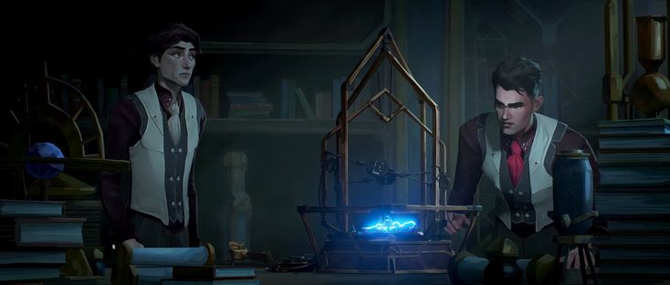

|

|
Viktor de Arcane: Um Gênio Manipulado pela Ciência
Viktor, o brilhante inventor de Zaun, ganhou uma nova dimensão em Arcane. Sua jornada é marcada pela ambição, pela dor e pela busca por um significado maior. A série nos convida a refletir sobre os limites da ciência, os dilemas da ética e a natureza da humanidade.
|
Viktor e Jayce: Uma Amizade Fracturada pela Ciência
A relação entre Viktor e Jayce é uma jornada complexa e multifacetada que transcende a mera amizade. É uma história sobre ambição, ética, o poder da inovação e a fragilidade dos laços humanos. Ao explorar os temas da ciência, da tecnologia e da natureza humana, Arcane nos convida a refletir sobre o nosso próprio lugar no mundo e as consequências de nossas escolhas.
|
|